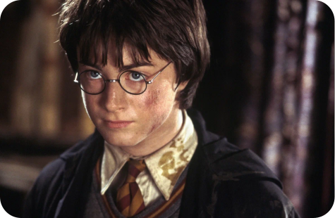
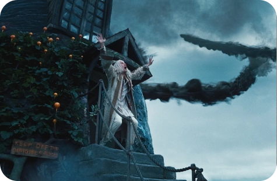

Поддержка

Тайны Хогвартса: Неизвестные факты о школе волшебства
 Творческий процесс: Как создавался "Мой сосед Тоторо"
Творческий процесс: Как создавался "Мой сосед Тоторо"
 Фанатские теории о «Друзьях»
Фанатские теории о «Друзьях»
 Персонажи «Шрэка»: Разрушение стереотипов
Персонажи «Шрэка»: Разрушение стереотипов
 Кулинарная магия: Рецепты из мира Гарри Поттера
Кулинарная магия: Рецепты из мира Гарри Поттера
---

Магические существа в «Гарри Поттере»: Обзор
 История создания «Черепашек-ниндзя»
История создания «Черепашек-ниндзя»
 История создания «Шрэка»: Процесс создания первого фильма
История создания «Шрэка»: Процесс создания первого фильма
 Как элементы японской культуры отражаются в кино
Как элементы японской культуры отражаются в кино
 Музыка в «Мой сосед Тоторо»: атмосфера сотканная звуком
Музыка в «Мой сосед Тоторо»: атмосфера сотканная звуком